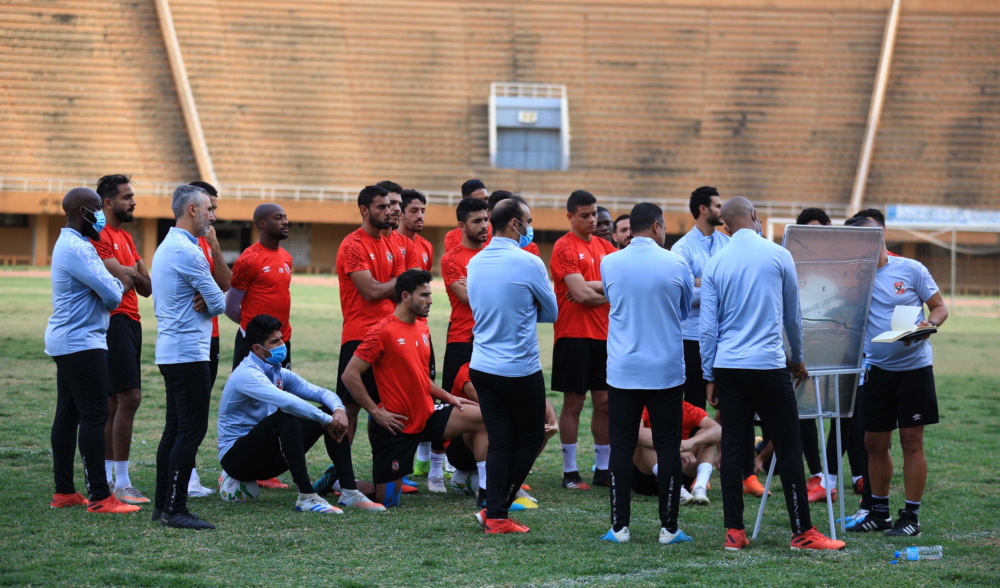

Al Ahly Sporting Club (Arabic: النادي الأهلي الرياضي), commonly referred to as Al Ahly, is an Egyptian professional sports club based in Cairo. It is best known for its professional football team that plays in the Egyptian Premier League, the top tier in the Egyptian football league system, and is the most decorated football club in the world.[1][2] It was founded on 24 April 1907, as a gathering place for Cairo's Student Unions.
Al Ahly has a record of 42 national league titles, 37 national cup titles, and 11 national super cup titles, making them the most decorated club in Egypt. In addition, Al Ahly has never been relegated to the Egyptian Second Division.
In international competitions, the club has won a record nine CAF Champions League titles, a CAF Confederation Cup, a record six CAF Super Cups, a record four African Cup Winners' Cups, an Afro-Asian Club Championship, an Arab Club Champions Cup, an Arab Cup Winners' Cup, a record two Arab Super Cups, and won a bronze medal in the 2006 FIFA Club World Cup. Al Ahly is the second most successful club in the world in terms of number of international titles won with 25, behind only Real Madrid with 26.[3]

Establishment and start of the club
The idea of establishing Al Ahly in the first decade of the 20th century was raised by Omar Lotfy during his presidency of the High School Students Club which was established in 1905. The establishment of the club of high school students was for political reasons, and found that these students needed a sports club that gathers them for leisure and exercise. He discussed the idea of establishing the club with a group of friends who were enthusiastic about it, and in 1907 Al Ahly was established.[4]
Talaat Harb, president of the Bank of Egypt, contributed 100 pounds to the establishment of the club.
Saad Zaghloul, the Minister of Education, became the first honorary president of Al Ahly.
The club was first headed by Mitchell-Innes, who was a British advisor to the Ministry of Finance at the time, in order to facilitate financial support for the club. An official meeting of the club's board was held on 24 April 1907. The committee met at 5:30 pm in the house of Mitchell-Innes in Giza under his chairmanship and the membership of Idris Ragheb Bey, Ismael Seri Pasha, Amin Sami Pasha, Omar Lotfi Bek and Mohamed Effendi Sherif as secretary.[5]
The establishment of the club was approved and Ismail Seri, as an architect, designed the main building of the club which was revised by Mitchell-Innes to locate the building in the south eastern corner of the land so that the building main entrance would face north. A civil company on behalf of Al Ahly Sports Club was established and shares of the company worth 5EGP Pounds per share, and was the goal of the club when it was established to raise the amount of 5000 pounds, but it was Collected 3165 pounds over
a year and that was not enough, which forced the club to borrow 1,000 pounds from the National Bank of Egypt in March 1908 by Omar Sultan and Idris Ragheb and Talaat Harb which contributed 100 pounds to the establishment of the club. The first honorary president of the club was the Minister of Education Saad Zaghloul.[6] The name of the Al Ahly Sporting Club was suggested by Amine Samy Amin, to serve the students and graduates of high schools who were the mainstay of the revolution against the British occupation.[7]


-5f60ad4de17ad.png)